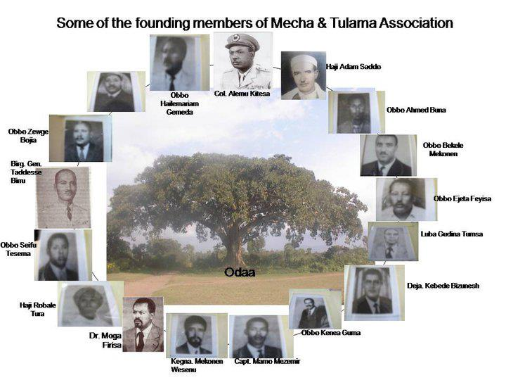
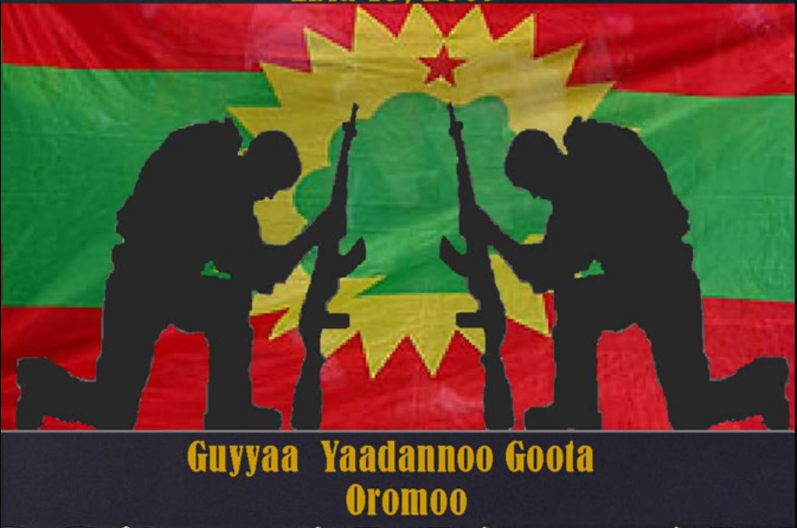
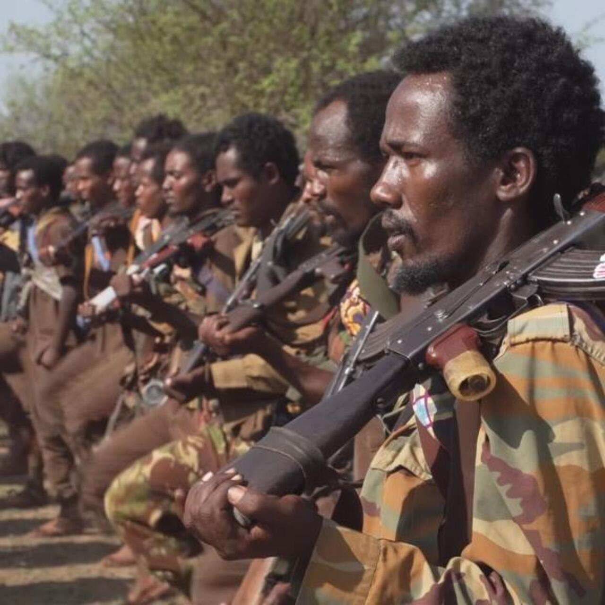
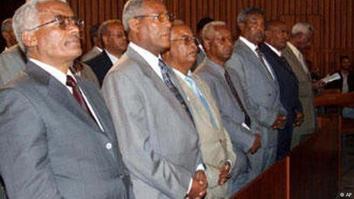
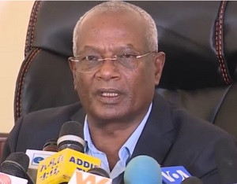
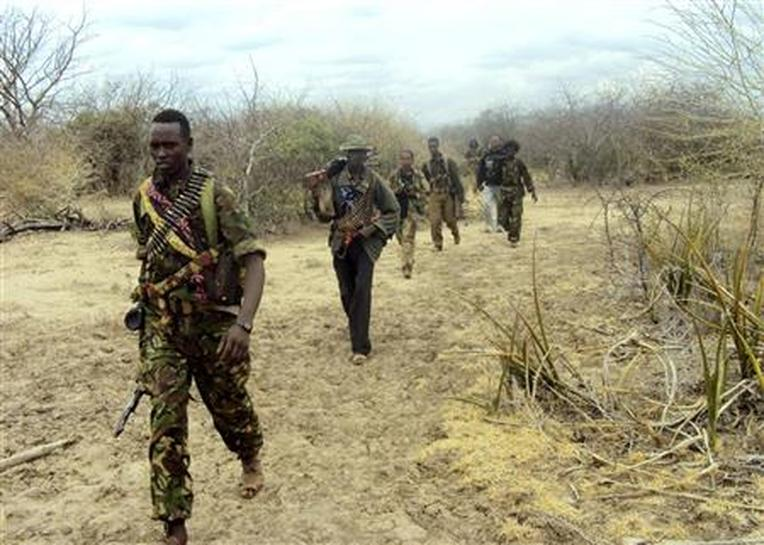
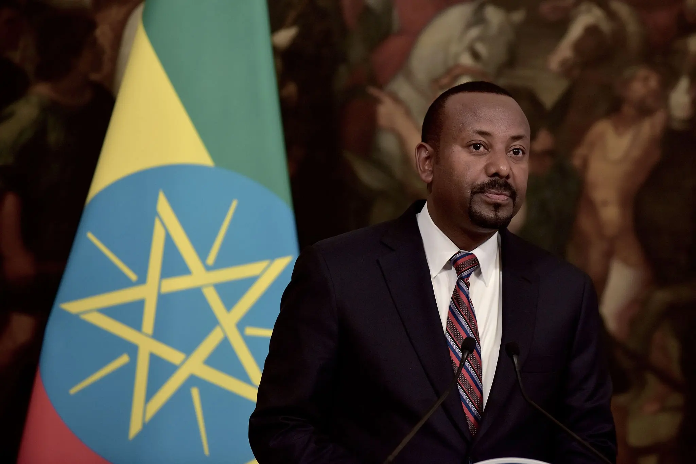

Historical Timeline

Seeds of Resistance
Oromo intellectuals and activists begin organizing in response to land dispossession and cultural suppression under Haile Selassie's imperial government. The Mecha and Tulama Self-Help Association is founded, one of the earliest Oromo civic organizations.

Founding of the OLF
The Oromo Liberation Front is formally established. The founding charter articulates the goal of liberating the Oromo nation from "Ethiopian colonialism." The organization adopts the Odaa tree — a sacred Oromo symbol — as part of its iconography.
.jpg)
The Derg Takes Power
A Marxist military junta known as the Derg overthrows Emperor Haile Selassie. Despite initial land reform rhetoric, the new regime continues repressive policies against Oromo political aspirations. The OLF launches its armed struggle (the Oromo Liberation Army) against the Derg.

OLA Armed Operations Begin
The Oromo Liberation Army begins significant guerrilla operations in Western and Southern Oromia. The OLF establishes rear bases in neighboring Somalia and Sudan, drawing support from regional geopolitics of the Cold War era.

Fall of the Derg & Peace Talks
The Derg collapses. The OLF joins the Transitional Government of Ethiopia alongside the EPRDF, gaining recognition as a legitimate political actor. This marks the OLF's first and only period of legal political participation. Internal tensions and allegations of exclusion soon emerge.

Withdrawal from Transitional Government
The OLF withdraws from the transitional government, citing harassment of its members and irregularities in regional elections. It returns to armed opposition. The Ethiopian government subsequently designates the OLF as a terrorist organization.

Exile, Fragmentation & Resilience
The OLF operates largely from exile in Asmara, Eritrea, and later Kenya and Europe. Internal divisions lead to multiple splinter factions. Despite this, the organization maintains symbolic importance and continues advocacy in the diaspora and international forums.

Abiy Ahmed & New Political Opening
Prime Minister Abiy Ahmed, himself of Oromo heritage, comes to power and removes the terrorist designation from the OLF. OLF leadership returns from exile to mass celebrations in Addis Ababa. Peace negotiations begin, raising hopes for resolution.

OLA Splinter & Continued Conflict
A faction of the Oromo Liberation Army, now calling itself "OLA-Shane," rejects peace negotiations and continues armed operations, particularly in Western Oromia. The Ethiopian government and OLF leadership both publicly distance themselves from this faction, though it claims the OLA name.

Escalating Conflict in Western Oromia
Armed clashes between Ethiopian federal forces, Amhara militias, and the OLA-Shane intensify, with significant civilian casualties reported by international observers including Human Rights Watch and Amnesty International. Peace talks stall and resume intermittently.
.jpg)
.jpg)
.jpg)